From Fuses to Relays and Components
Power Distribution- From Fuses to Relays and Components (part 1 of 12):
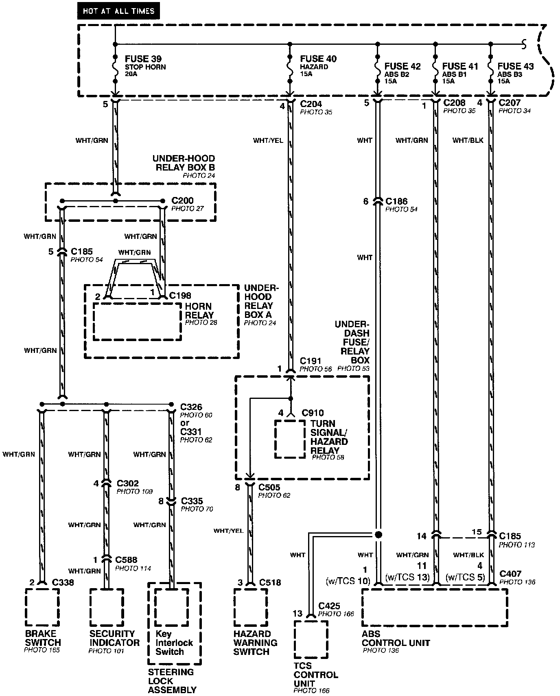
Power Distribution- From Fuses to Relays and Components (part 2 of 12):
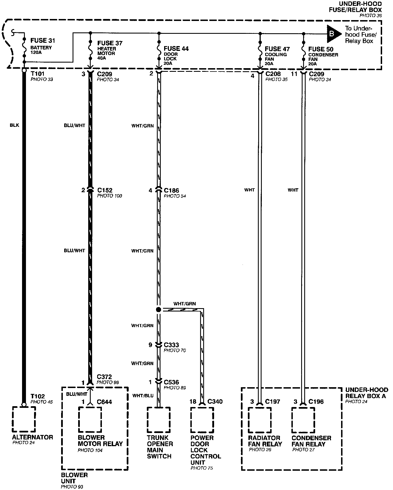
Power Distribution- From Fuses to Relays and Components (part 3 of 12):
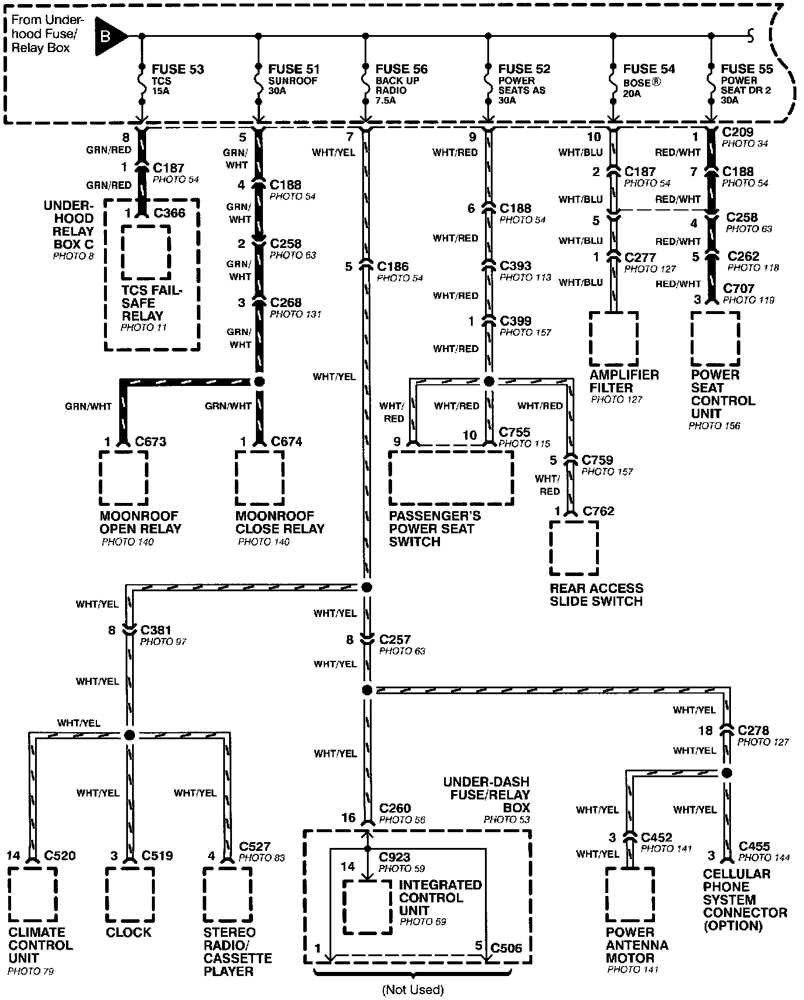
Power Distribution- From Fuses to Relays and Components (part 4 of 12):
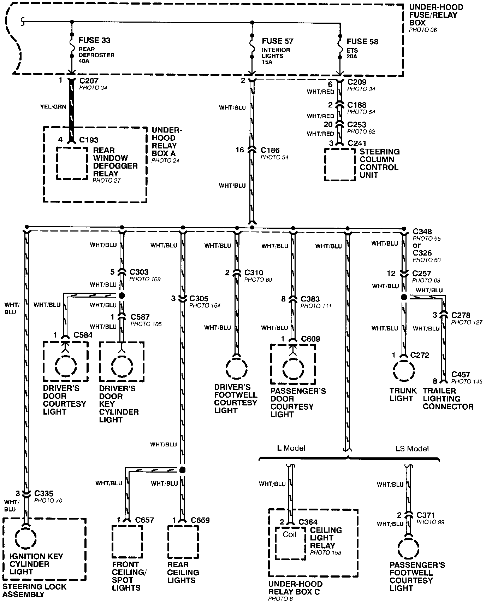
Power Distribution- From Fuses to Relays and Components (part 5 of 12):
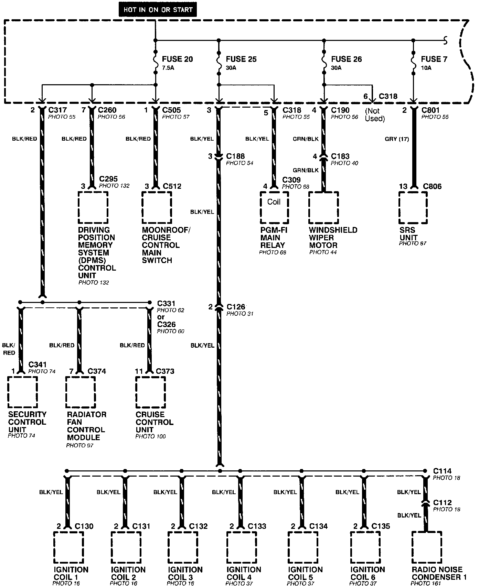
Power Distribution- From Fuses to Relays and Components (part 6 of 12):
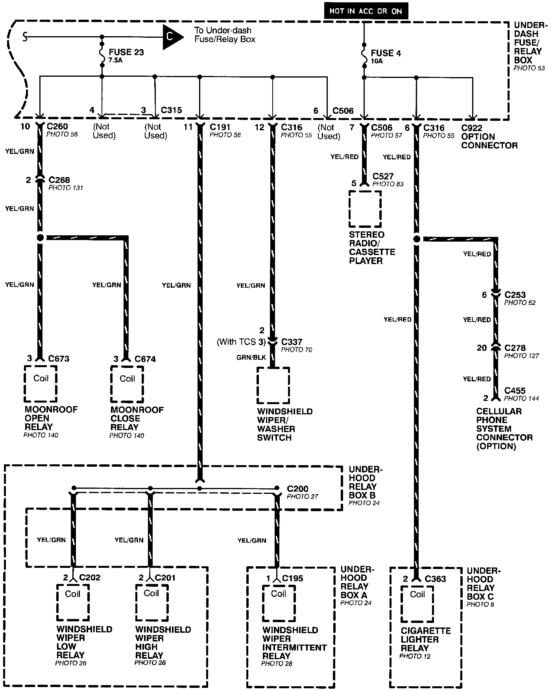
Power Distribution- From Fuses to Relays and Components (part 7 of 12):
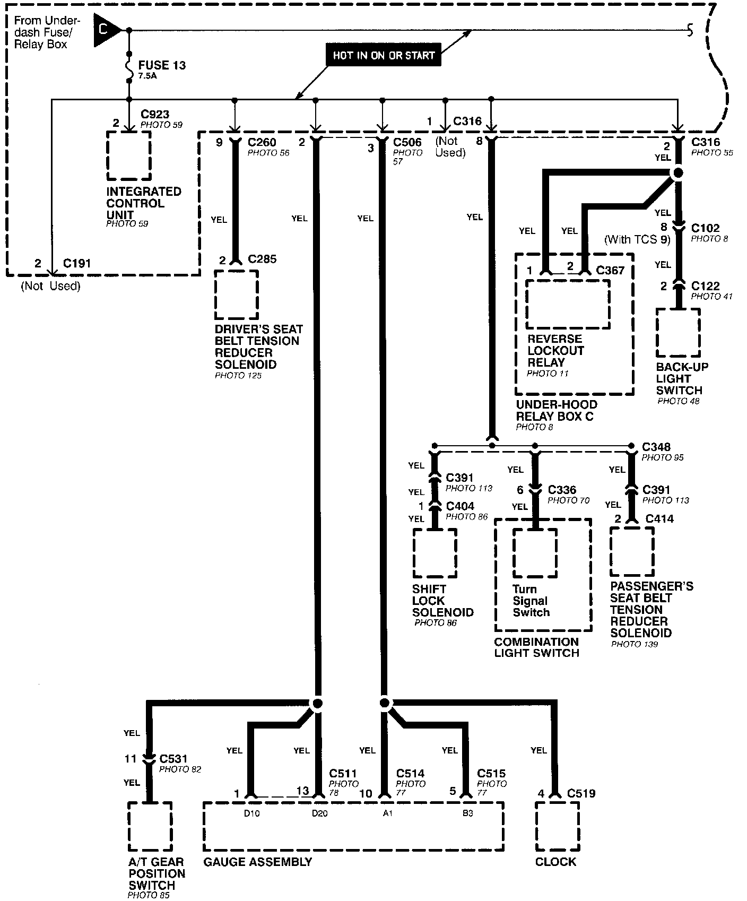
Power Distribution- From Fuses to Relays and Components (part 8 of 12):
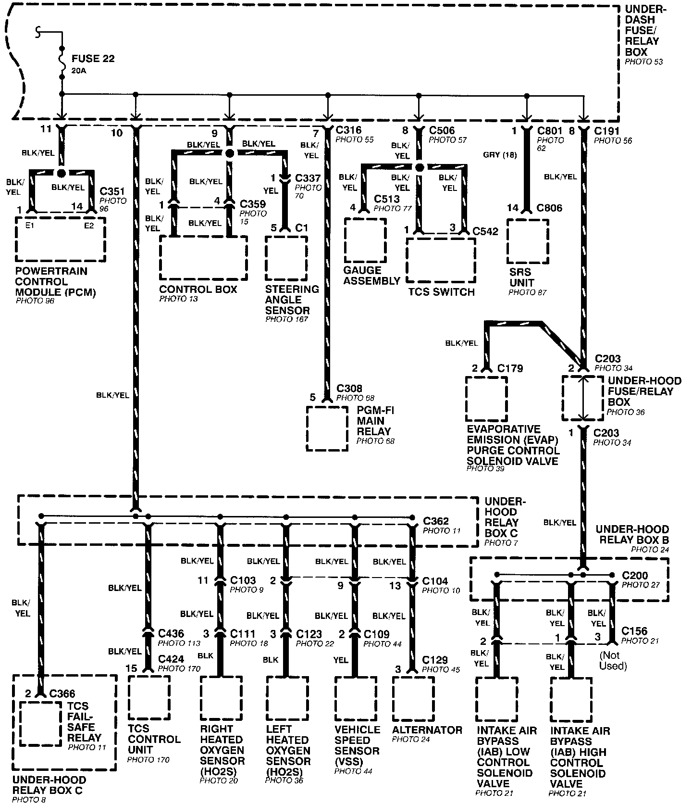
Power Distribution- From Fuses to Relays and Components (part 9 of 12):
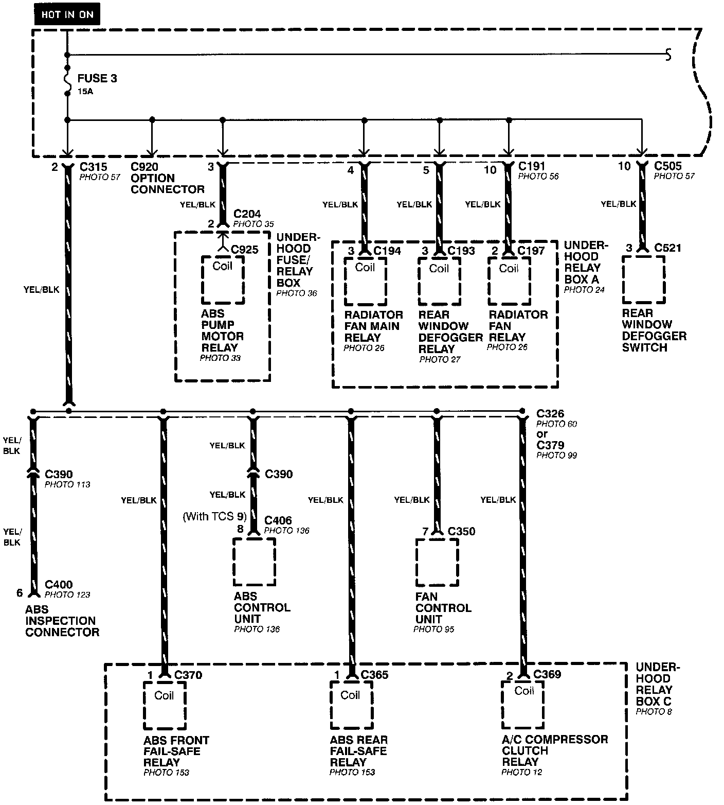
Power Distribution- From Fuses to Relays and Components (part 10 of 12):
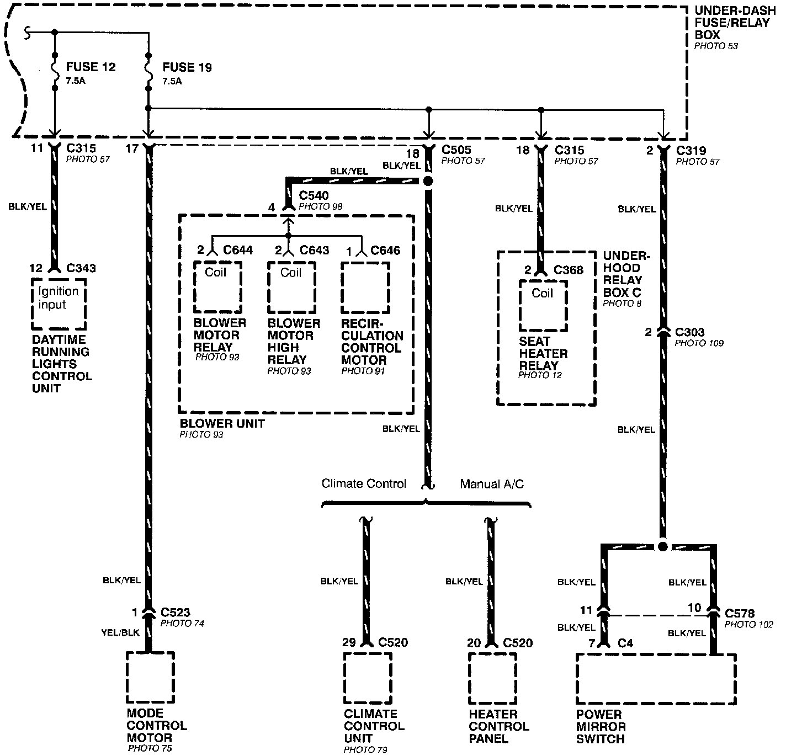
Power Distribution- From Fuses to Relays and Components (part 11 of 12):
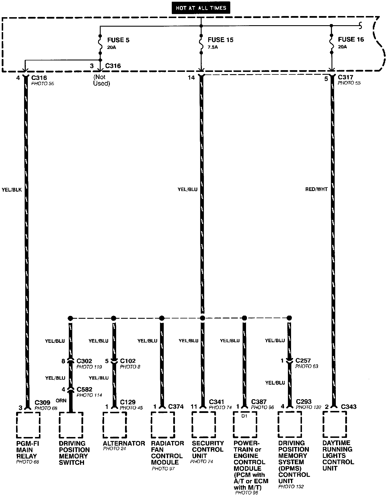
Power Distribution- From Fuses to Relays and Components (part 12 of 12):
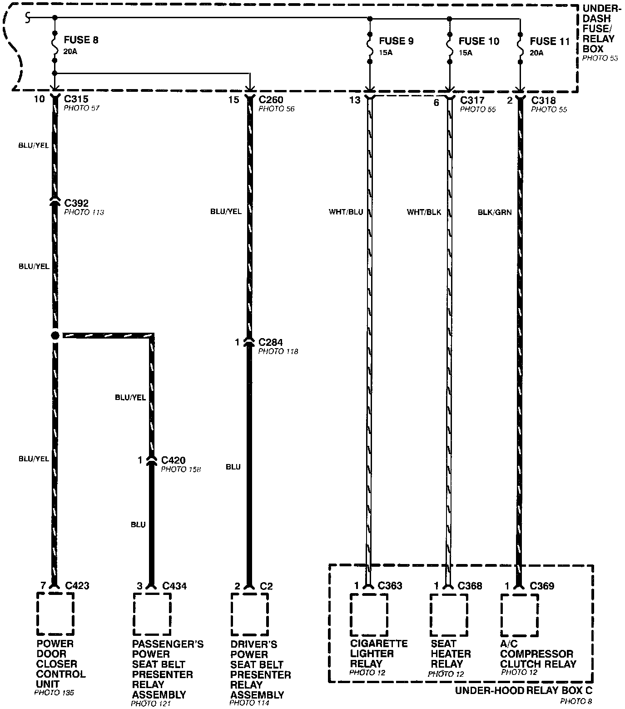